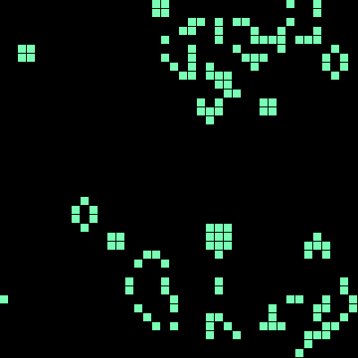
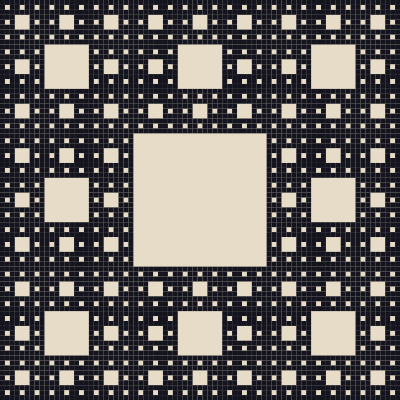
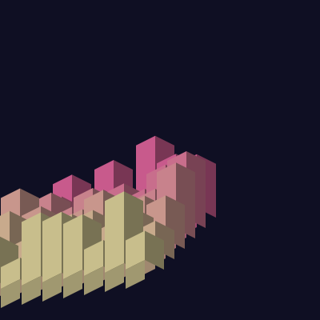
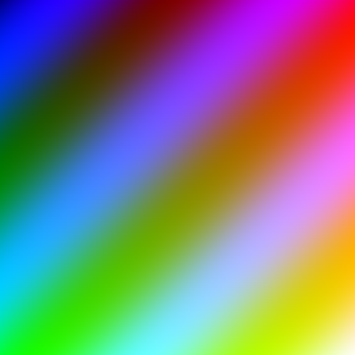

2 / bio
21 ans, etudiant b3 a l'iim, en alternance dans une boite web. je bricole une golf 2 de 1991 le week-end et j'ai monte un hackintosh pour voir si c'etait possible.
le bot du site connait les 31 sketches et raconte son prefere. en une phrase : c'est un bot a mots cles, pas une ia, et il aime bien parler du jeu de la vie (#9).
site : [URL du site a ajouter]


#9 automate cellulaire, jeu de la vie
#26 grille recursive, sierpinski


#8 ville isometrique, cubes empiles
#31 gradient pixel par pixel, faux shader
plie, coupe, agrafe a la main
genuary 2026, projet p5.js
21 ans, etudiant b3 a l'iim, en alternance dans une boite web. je bricole une golf 2 de 1991 le week-end et j'ai monte un hackintosh pour voir si c'etait possible.
mail : boudjemelinehaider@gmail.com
github : github.com/BrayanOfficiel
c'est du code qui produit une image au lieu d'un dessin fait a la main. on ecrit des regles, pas la forme finale. le hasard ou le bruit de perlin fait varier le resultat a chaque fois. genuary c'est un entrainement a ca, 31 jours, 31 regles.